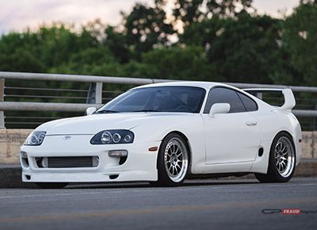

About Me
Hello, my name is Mario!
I'm a senior at Lawndale High School. I have computer science in period 3. I'm 17.
My favorite food is carne asada but I love food in general. Everyone says that i'm quiet but I think I have a lot to offer
to people because im very understanding and i'm a nice person to get to know overall.
My favorite car is the Toyota Supra. Ever since I saw it in the
first Fast and The Furious, it has been my favorite. I love imports more than any other type of car, and
the Supra would be my favorite, 2nd being the Nissan Skyline.

My favorite artist of all time is Logic. I have been listening to him
since he was making mixtapes and recently he's blowing up and getting bigger and bigger because of his
recent album "Everybody." He makes incredible music and is a hell of a rapper, he knows how to make a
song that you'll vibe out to or get hyped up to. His message is also something so many people should
follow: Peace, Love, and Positivity.
My favorite sport is baseball. My favorite team is the Dodgers.
I'm not much of a fan of the rest of the sports because they don't catch my attention that much at all.
Baseball gets me hype unlike the rest of the sports, I could watch them but I have to be into it, it can't be any
random game on tv.
Thats a little bit about me, not too much but there's a little bit of things that I like
and generally who I am. My favorite car, artist, and sport/favorite team.